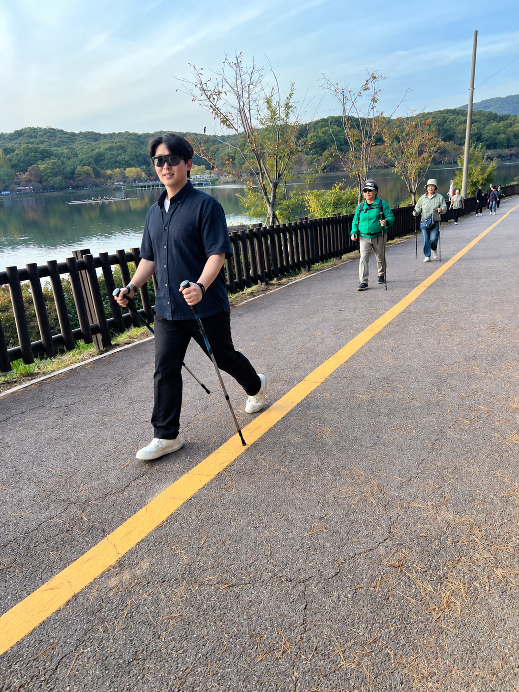
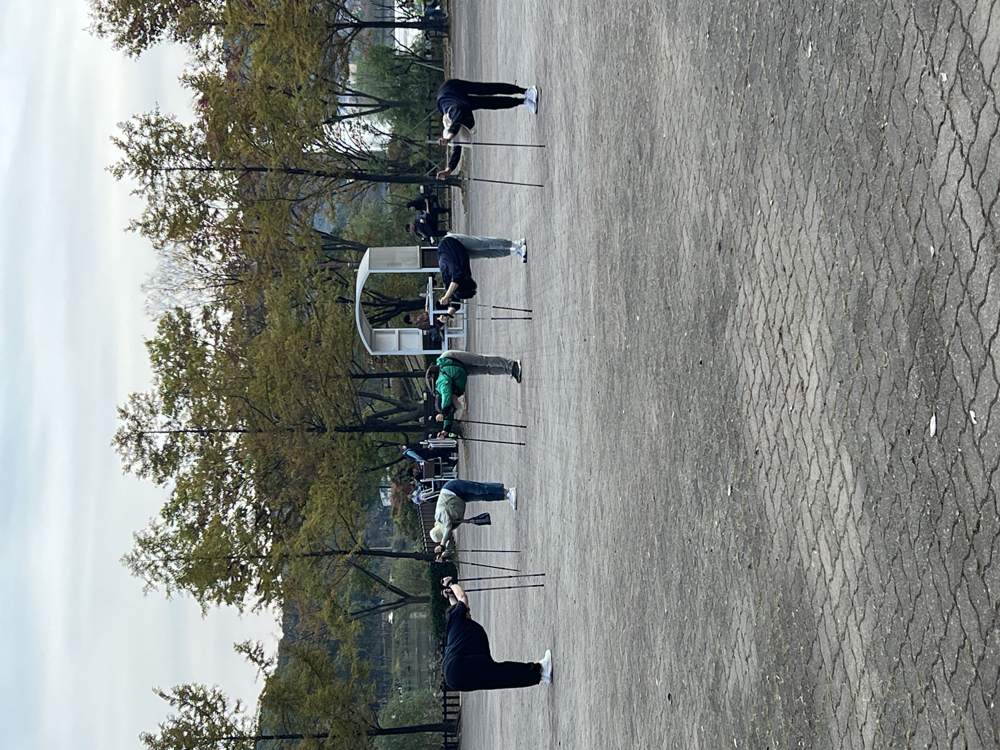
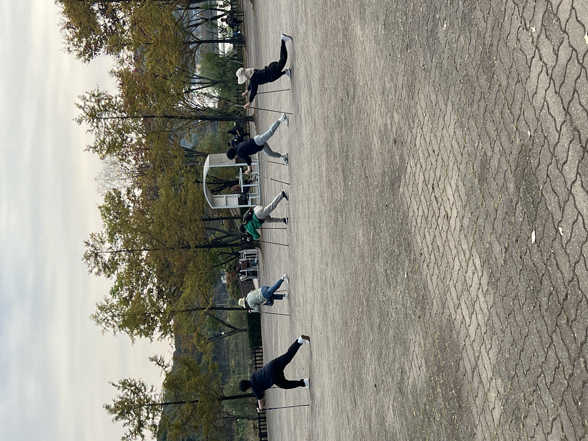
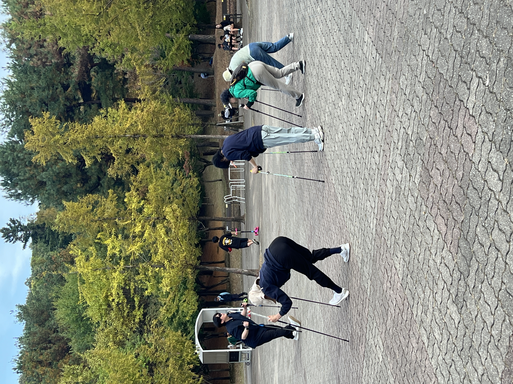

야외 운동 활동 ·
분당 율동공원에서 함께한
노르딕워킹
호숫길을 따라 걷고, 폴을 활용해 몸을 움직이며
가을 공원에서 함께한 한 시간을 소개합니다.

함께한 활동
공원에서 만나는 일상의 움직임
분당튼튼운동센터는 2026년 10월 17일, 분당 율동공원에서 1시간 동안 노르딕워킹 활동을 진행했습니다.
폴을 활용해 호숫길을 함께 걷고, 공원의 열린 공간에서 다양한 동작과 스트레칭을 함께했습니다. 자연 속에서 몸을 움직인 순간들을 사진으로 전합니다.
- 일자
- 장소
- 분당 율동공원
- 소요시간
- 1시간
- 활동
- 노르딕워킹 · 폴 활용 동작 · 스트레칭
호숫길에서의 한 걸음
폴과 함께 이어가는 걸음
호수를 따라 이어지는 산책로에서 폴을 짚으며 함께 걸었습니다. 공원의 풍경과 참여자들의 움직임이 어우러진 노르딕워킹 현장입니다.

폴을 활용한 움직임
함께 연습하는 동작과 스트레칭
폴을 보조 도구로 활용해 상체를 숙이거나 다리를 뻗는 등 다양한 동작을 함께했습니다. 같은 공간에서 서로의 움직임을 살피며 운동을 이어갔습니다.



일상으로 이어지는 운동
함께 걷고, 함께 움직이는 시간
가까운 공원에서 함께한 한 시간이 일상 속 운동을 이어가는 즐거운 경험으로 남기를 바랍니다. 분당튼튼운동센터는 각자의 몸 상태와 운동 목적을 세심하게 살피겠습니다.
외부 활동 목록 보기